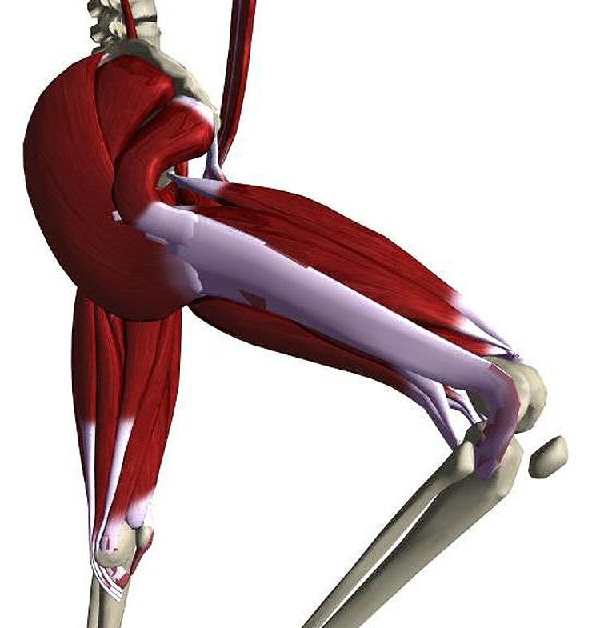
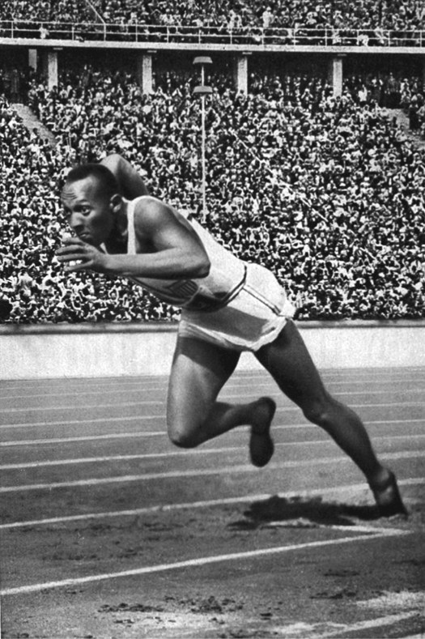
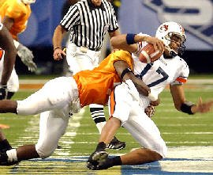
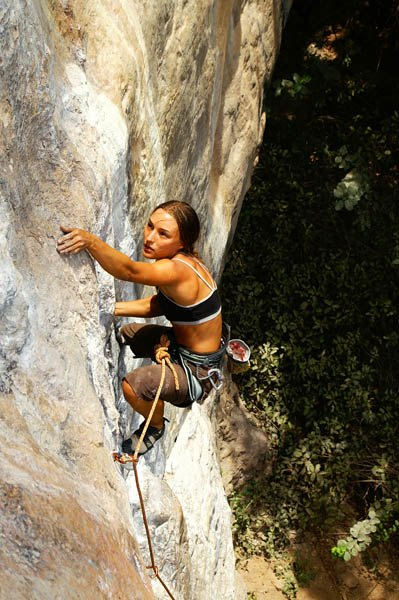
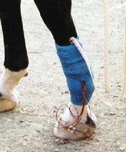
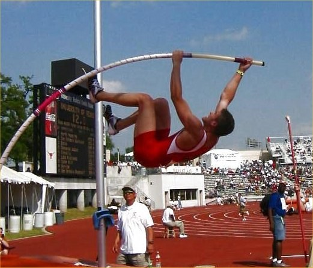
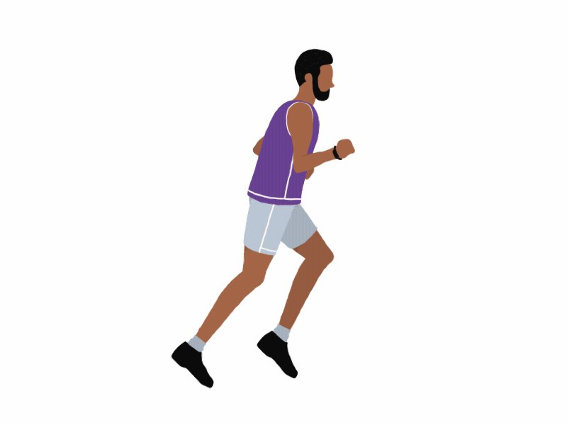
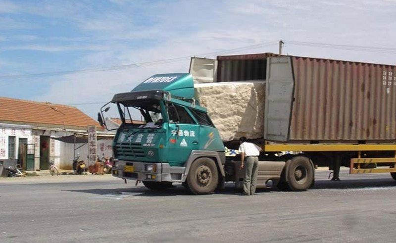
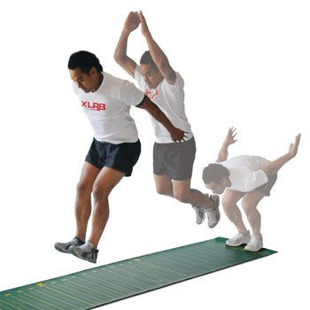
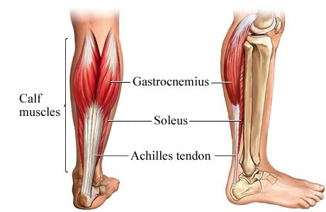

State how work, energy and power are defined and how the three are related
Distinguish kinetic, gravitational and elastic energy, and add them
Apply the work–energy theorem and conservation of mechanical energy
Separate positive from negative work, and generation from absorption
Calculate joint power as the product of moment and angular velocity
Interpret the stretch–shortening cycle and gait in energetic terms
Two ways to describe the same motion
Nothing here is new physics — it is a change of bookkeeping
FORCE AND MOMENTUM — what you have already seen
Newton's second law: ΣF = m·a
Impulse–momentum: F·Δt = Δ(m·v)
Force accumulated over time
Answers: how fast is it going?
WORK AND ENERGY — what we add today
Work: force accumulated over distance
Energy: the capacity to do work
Power: the rate at which work is done
Answers: how high, how far, how much did it cost?
Both routes start from the same force record. Integrate it over
time and you get velocity. Integrate it over distance and
you get energy. Choose whichever one matches what the question gives you.
One force record, two integrals
The same measured jump, read two different ways
How the three fit together
The whole lecture on one slide — click any box
Work
A force acting through a displacement
W = F · d · cos θ
SI unit
joule (J) 1 J = 1 N·m
A scalar
No direction of its own. The sign comes entirely from cos θ.
θ
The angle between the force and the displacement — not the ground.
No displacement means no work. Holding a barbell
overhead is exhausting and mechanically zero.
Only the component of F along d does work
The sign of work
All three of F, d and θ are drawn to scale — move any of them
Positive and negative work
The muscle is doing both, every step you take
POSITIVE WORK — θ < 90°
Force and motion in the same direction
The muscle shortens under load — concentric
Energy flows into the body segment
Pushing out of the bottom of a squat
NEGATIVE WORK — θ > 90°
Force opposes the motion
The muscle lengthens under load — eccentric
Energy flows out of the segment
Lowering into a squat, or landing
Negative work is not wasted work. It is how you stop, how you
land, and — in a countermovement — how you load a tendon before you use it.

Quadriceps: concentric on the way up, eccentric on the way down
Internal and external work
Not all of the work a body does moves the body
EXTERNAL WORK
Work done on objects or against the environment
Raising the centre of mass, lifting a load, overcoming drag
What a force plate or an ergometer measures
INTERNAL WORK
Work done moving the segments relative to the centre of mass
Swinging the legs and arms in running
Invisible to the force plate, but it still costs energy
A runner on a treadmill at constant speed raises their centre of mass
by nothing over a full stride, so the external work is near zero — and yet they are clearly
working hard. All of it is internal.
Energy
The capacity to do work — and it comes in three mechanical forms
Emech = KE + Ug + Ue
KINETIC
KE = ½ · m · v²
Because it is moving
GRAVITATIONAL
Ug = m · g · h
Because of where it is
ELASTIC
Ue = ½ · k · x²
Because something is deformed
All three are scalars, measured in joules — the same unit as work
They simply add; there is no vector sum to do
Work is how energy moves between forms and between bodies
Energy is never created here, only shifted or dissipated
Kinetic energy
The energy an object has because it is moving
KE = ½ · m · v²
A scalar, and always ≥ 0 — there is no such thing as negative kinetic energy
Mass enters once; velocity enters twice
Doubling the speed quadruples the energy. Halving the mass only halves it
This asymmetry is why injury severity scales so brutally with speed

70 kg at 10 m/s carries 3,500 J
Kinetic energy
Doubling the velocity quadruples the energy
Momentum and energy are not the same thing
Double the speed: momentum doubles, kinetic energy quadruples
v = 5 m/s
v = 10 m/s
change
Momentum p = m·v
350 kg·m/s
700 kg·m/s
×2
Kinetic energy ½mv²
875 J
3500 J
×4
Momentum tells you what it takes to stop it in a given time
Kinetic energy tells you what it takes to stop it in a given distance
A 70 kg athlete at 10 m/s and a 140 kg athlete at 5 m/s have the same momentum —
and the lighter, faster one carries twice the energy

Both quantities are conserved in a collision — but they are not interchangeable
The work–energy theorem
Net work equals the change in kinetic energy
Wnet = ΔKE = ½mvf² − ½mvi²
WHAT IT SAYS
Wnet > 0 → the object speeds up
Wnet < 0 → it slows down
Wnet = 0 → the speed is unchanged
WHERE IT IS USED
Sprint acceleration: net forward work becomes kinetic energy
Braking at heel-strike: negative work removes it again
Throwing: work on the implement becomes its kinetic energy
It is a theorem, not a definition — it follows from
ΣF = ma. And it is net work: every force that acts counts, friction and
gravity included.
The work–energy theorem
The area and the energy are the same number
Gravitational potential energy
Energy stored in an object's vertical position
Ug = m · g · h
h is measured from a reference height that you choose — only
changes in Ug are physically meaningful
Raising 1 kg by 1 m stores about 9.81 J
A change in Ug is minus the work done by gravity
Linear in height — unlike the other two, nothing is squared

Every metre gained is m·g joules banked
Gravitational potential energy
Move the reference and the number changes; the climb does not
Elastic potential energy
Energy stored in a deformed spring — or a tendon
Ue = ½ · k · x²
k is the stiffness in N/m, x the deformation from resting length
Double the stretch, four times the energy — same quadratic structure as KE
Tendons, ligaments and aponeuroses are all biological springs
Real tissue returns about 90–93% of what it stores; the rest is lost as heat

A horse's distal limb is almost all tendon and bone — spring, not motor
Elastic potential energy
Stiffness and stretch do not contribute equally
Conservation of mechanical energy
When only gravity and springs act, the total does not change
KE + Ug + Ue = constant
The three terms trade back and forth, but their sum is flat
This holds only without friction, drag or muscle work
In the flight phase of a jump it is exactly true — nothing but gravity acts
During push-off it fails completely, because the muscles are pouring energy in

Run-up KE → pole Ue → height Ug, all three in one movement
Conservation of mechanical energy
Kinetic into potential and back again, through one flight
Power
The rate at which work is done, or energy transferred
P = W / t
Time-average power
P = F · v
Instantaneous linear power
P = M · ω
Joint power — moment × angular velocity
SI unit: the watt — 1 W = 1 joule per second
These are one quantity written three ways, not three quantities
P = F·v follows from P = W/t: W = F·d, divide by t, and d/t is v
1 horsepower ≈ 746 W; a fit cyclist holds about 300 W for an hour

Same work, half the time, double the power
Power
One lift, three formulas, the same watts
The framework, in one table
Everything from here on is an application of these four lines
Definition
Unit
What it tells you
Work
W = F·d·cos θ
J
How much energy was transferred by a force acting through a distance
Energy
KE + Ug + Ue
J
How much capacity to do work a body holds, in three forms that add
Work–energy
Wnet = ΔKE
J
Net work is the change in kinetic energy
Power
P = W/t = F·v = M·ω
W
How fast that transfer happens
Energy is the currency, work is the transaction, power is the rate.
Every problem in the next section is asking where a fixed number of joules went.
Part 02
Working problems
Eight of them, in the order the framework was built
Problem 1 — work at an angle
W = F · d · cos θ

A strongman competitor pulls a truck 100 m along a flat road. The harness rope
runs up to the truck at 20° above horizontal, and he maintains a steady
2000 N of tension.
How much work does he do on the truck?
Given:
F = 2000 N
d = 100 m (horizontal)
θ = 20°
Problem 1 — solution
Only the component along the motion counts
W = F · d · cos θ
W = (2000 N)(100 m)(cos 20°)
W = (2000)(100)(0.940)
W ≈ 188,000 J = 188 kJ
At 0° — rope horizontal — it would have been the full 200 kJ
The missing 12 kJ was never lost; that component was lifting, not pulling,
and the truck did not move upward
The vertical component, 2000·sin 20° = 684 N, does
zero work over the whole 100 m
Resolve the force; keep the component along d
Problem 2 — work against gravity
A lift at constant velocity
An athlete lifts a 100 kg barbell 2.1 m from
the floor to overhead at a roughly constant velocity.
How much work does the athlete do on the bar?
Given:
m = 100 kg
d = 2.1 m (vertical)
a ≈ 0 (constant velocity)
θ = 0° (force and displacement both up)
At constant velocity the two forces are equal and opposite
Problem 2 — solution
And the first appearance of a conversion
At constant velocity ΣF = 0, so the lifting force equals the weight of the bar
F = m · g = (100 kg)(9.81 m/s²) = 981 N
The force and the displacement are both upward, so θ = 0° and cos θ = 1
W = F · d · cos(0°) = (981 N)(2.1 m)(1)
W ≈ 2060 J
Those 2060 J did not vanish — they are sitting in the bar's new
position as gravitational potential energy, and you can get them back by dropping it.
Wagainst gravity = ΔUg.
Problem 3 — kinetic energy
And what happens when you change the speed
A 70 kg sprinter is running at 10 m/s.
(a) How much kinetic energy do they have?
(b) How much work was required to get them there from a standing start?
(c) What happens to (a) if they reach 12 m/s?
Given:
m = 70 kg
vi = 0, vf = 10 m/s
then vf = 12 m/s
Problem 3 — solution
A 20% increase in speed costs 44% more energy
(a) at 10 m/s
KE = ½ · m · v² = ½(70)(10)²
KE = 3500 J
(b) starting from rest, vi = 0 so ΔKE is all of it
Wnet = ΔKE = 3500 − 0 = 3500 J
(c) at 12 m/s
KE = ½(70)(12)² = 5040 J
an extra 1540 J — 44% more
v (m/s)
KE (J)
relative
5
875
0.25 ×
10
3500
1.00 ×
12
5040
1.44 ×
20
14000
4.00 ×
The last 2 m/s cost almost half as much again as the first 10 m/s
put together. That is the squared term, and it is why the final metres of a sprint are
so expensive to buy.
Problem 4 — gravitational potential energy
Where does a vaulter's height come from?
A 70 kg pole vaulter raises their centre of mass to
6.0 m above its standing height.
(a) How much gravitational potential energy have they gained?
(b) How fast would they have to be running for their kinetic energy alone to supply it?
Given:
m = 70 kg
Δh = 6.0 m
g = 9.81 m/s²
Problem 4 — solution
And why vaulting is not purely a conversion
(a)
ΔUg = m · g · Δh = (70)(9.81)(6.0)
ΔUg ≈ 4120 J
(b) set the kinetic energy equal to it — the mass cancels
½ · m · v² = m · g · Δh
v = √(2 · g · Δh) = √(2 × 9.81 × 6.0)
v ≈ 10.8 m/s
10.8 m/s is faster than almost any vaulter runs — elite approach speeds are about
9.5 m/s, worth roughly 3160 J.
The missing 960 J is muscular work done during
the plant, the swing and the pull. The pole is a very good spring, but it is not a
free lunch.
Note the mass cancelled in (b) — this is the same cancellation that
appears in every jump-height calculation
Nothing here depended on the shape of the vault, only on its two endpoints
Problem 5 — work and power together
The same climb, asked two ways
A 70 kg student climbs a staircase 3.0 m high.
(a) How much gravitational potential energy do they gain?
(b) If the climb takes 2.0 s, what average power did they produce?
(c) And if they walk it in 8.0 s instead?
Given:
m = 70 kg
Δh = 3.0 m
Δt = 2.0 s, then 8.0 s
Problem 5 — solution
Same work, very different power
ΔUg = m · g · Δh = (70)(9.81)(3.0)
ΔUg ≈ 2060 J
P = W / t = 2060 J / 2.0 s
P ≈ 1030 W (about 1.4 hp)
P = 2060 J / 8.0 s
P ≈ 258 W
2060 J is the same number as the barbell in Problem 2 — a 100 kg bar raised 2.1 m and a
70 kg student raised 3.0 m are the same job.
Once it is energy, it does not remember how it was earned.
1030 W for two seconds is genuinely large — roughly three times what a trained
cyclist can hold for an hour
258 W, walked, is about what that same cyclist can hold for an hour
The difference between those two numbers is the subject of the power–duration
curve in Part 03
Problem 6 — the Margaria–Kalamen stair sprint
A field test of peak anaerobic power — you will run it in the lab
A 75 kg athlete sprints up a staircase. Timing gates are set
on the 3rd and 9th steps, each step is
0.175 m high, and the athlete covers the six steps between the gates in
0.52 s.
What is their peak anaerobic power, in watts and in watts per kilogram?
Given:
m = 75 kg
step = 0.175 m, 6 steps between gates
Δt = 0.52 s
The first two steps are run-up — the clock starts at speed
Problem 6 — solution
Only the vertical rise counts
The work being measured is against gravity, so the horizontal travel is irrelevant
Δh = 6 × 0.175 m = 1.05 m
P = m · g · Δh / Δt
P = (75)(9.81)(1.05) / 0.52
P ≈ 1486 W
P / m = 1486 / 75 ≈ 19.8 W/kg — competitive for a power athlete
Problem 6 — the same test, with your own numbers
Change the mass and watch what does not move
Problem 7 — elastic potential energy
A gymnast on a beat board

A gymnast lands on a beat board of stiffness k = 8600 N/m
and compresses it 0.07 m.
(a) How much elastic energy is stored in the board?
(b) If all of it were returned to a 55 kg gymnast, how much extra
height would it buy?
Given:
k = 8600 N/m
x = 0.07 m
m = 55 kg
Problem 7 — solution
A small number, and that is the point
(a)
Ue = ½ · k · x² = ½(8600)(0.07)²
Ue = ½(8600)(0.0049)
Ue ≈ 21 J
(b) set the returned elastic energy equal to a gain in height
Ue = m · g · Δh
Δh = 21 / (55 × 9.81)
Δh ≈ 0.039 m (about 4 cm)
Compress the board twice as far and you store
four times as much — 84 J, worth about 16 cm. The squared term is why
a heavier, faster approach pays off so disproportionately.
21 J is genuinely small next to the ≈1500 J of a gymnast's run-up kinetic energy
No real board returns 100% — hysteresis takes a cut, so 4 cm is an upper bound
The board's main job is to reshape the force–time curve, letting the
gymnast apply a large force for longer than a rigid floor would allow
Problem 8 — conservation, and the mass cancelling
The single most useful result in jump testing
A 75 kg athlete leaves the ground with a vertical velocity
of 2.9 m/s. How high does their centre of mass rise?
Once they are airborne, only gravity acts — so mechanical energy is conserved.
Given:
m = 75 kg
vtake-off = 2.9 m/s
at the peak, v = 0
½mv² at take-off becomes mgΔh at the peak
Problem 8 — solution
The mass cancels — jump height depends only on take-off velocity
At the peak all of the take-off kinetic energy has become potential energy
½ · m · vto² = m · g · Δh
Δh = vto² / (2 · g)
Δh = (2.9 m/s)² / (2 × 9.81 m/s²)
Δh ≈ 0.43 m (43 cm)
The mass divided out of both sides. Measure take-off
velocity — or flight time — and you have the height without weighing anybody. This is why
jump mats work.
Problem 8 — try to make the mass matter
Drag it from 45 kg to 110 kg and watch the height
Problem 9 — energy dissipation and the helmet
The energy is fixed; all you can change is the distance
A cyclist riding at 6 m/s falls. Their head — about
8.1% of a 70 kg body mass, so 5.7 kg — starts
1.5 m above the ground and is brought to rest by the impact.
(a) How much energy must be dissipated?
(b) What average force does that take if the head stops in 0.5 cm
(no helmet) against 3 cm (a typical helmet)?
Given:
mhead = 5.7 kg
v = 6 m/s, h = 1.5 m
d = 0.005 m, then 0.03 m
The crumple zone is a distance, and W = F·d
Problem 9 — solution
Six times the distance, one sixth of the force
(a) kinetic plus the potential it still has to lose
E = ½mv² + mgh
E = ½(5.7)(6)² + (5.7)(9.81)(1.5)
E = 102 + 84 ≈ 186 J
(b) that energy is dissipated by a force over a distance
F = E / d
no helmet: 186 / 0.005 ≈ 37,200 N
helmet: 186 / 0.03 ≈ 6,200 N
Skull fracture becomes likely somewhere around 4–7 kN. Without a helmet
the impact is roughly six times over that threshold; with one it is at
its lower edge.
The helmet removed none of the 186 J. It only
spread it over six times the distance.
This is the same reasoning as a car crumple zone, an airbag, a crash mat and
flexing your knees on landing
Every one of them is buying distance, because that is the only term
in W = F·d you can control once the energy is fixed
Problem 9 — the whole curve
Change the speed, the height or the crumple distance
Part 03
Energy in the body
Generation and absorption, joint power, and the springs
Muscles generate and absorb energy
The same tissue is a motor, a brake and a spring
GENERATION — a source
Concentric: the muscle shortens while pulling
Chemical energy becomes mechanical energy
Positive work, positive power
Pushing off, climbing, accelerating
ABSORPTION — a sink
Eccentric: the muscle lengthens while pulling
Mechanical energy becomes heat — or tendon strain
Negative work, negative power
Landing, braking, walking downhill
Absorbed energy has two possible fates. It can be
dissipated as heat and lost, or stored elastically in
tendon and returned. Which one happens depends almost entirely on timing.
Generation on the way up, absorption on the way down
Joint power
The rotational form, applied one joint at a time
P = M · ω
M is the net joint moment, ω the joint angular velocity
Both are signed, and so is the product
Same sign → generation; opposite signs → absorption
Integrate joint power over time and you get the work done at that joint
This is how inverse dynamics answers "which joint did the work?"
— and the answer in a vertical jump is mostly hip and knee, with the ankle contributing
late and briefly.
M and ω in the same sense → the joint is generating
Joint power
Four quadrants — set the moment and the angular velocity
Muscle force, velocity and power
Peak power is at neither end of the range
Isometric (v = 0): maximum force, and no power at all
vmax: no force, and again no power
Peak power is at about 0.3 · vmax
The force there is only about 30% of maximum
Lengthening under load: force keeps climbing to about
1.8 × Fmax
There the power is negative — the muscle absorbs rather than produces
Power is a product, so it is zero whenever either term is zero. The
maximum has to lie somewhere in between — and it is much closer to the fast end than most
people guess. Olympic lifts and plyometrics are aimed at exactly that region.
Muscle force, velocity and power
Drag across both halves — lengthening on the left, shortening on the right
Peak power across activities
Explosive movements produce ten to fifty times steady-state power
The power–duration curve
What you can hold falls sharply with how long you have to hold it
The stretch–shortening cycle
Tendons store and return energy on every step
A muscle stretched immediately before it shortens produces more force and more
work than the same muscle shortening from rest
The Achilles returns roughly 35–50% of the mechanical energy a running step
needs — energy the muscles never have to produce
Less muscle work means a lower metabolic cost: running is about 50% more economical
than a muscle-only model predicts
The same mechanism powers countermovement jumps and hopping
Two percentages that get conflated constantly: the tendon
returns about 90–93% of what it stores (the rest is hysteresis, lost as
heat), and what it stores happens to be about 35–50% of what a step needs.
Different fractions, different meanings.

Gastrocnemius and soleus in series with one long tendon
The stretch–shortening cycle
One running stance, absorbed and returned
Countermovement against squat jump
Why the dip is worth 8 cm
Walking is a pendulum
The other way the body saves energy — and it needs no tendon at all
In walking the centre of mass vaults over the stance leg, rising and
falling about 4 cm each step
It is slowest at the top and fastest at the bottom — so kinetic and
potential energy are out of phase
Each is largely supplied by the other, so the muscles have to replace only the
difference
This inverted pendulum exchange recovers up to about 70% of the
energy a step would otherwise cost
Running works the opposite way: there KE and PE are
in phase — both lowest at mid-stance — so pendulum exchange is
impossible and the saving has to come from the tendons instead.
Vaulting over a straight stance leg
Walking is a pendulum
Measured gait — kinetic and potential, out of phase
Part 04
One measured jump
The whole lecture read off a single trial
Phases of a countermovement jump
Each phase has its own work and power signature — drag the figure to turn it
Work in a vertical jump
The same trial, integrated against displacement instead of time
One movement, four quantities
Work, energy and power are four readings off one force record
Putting it together
The same framework, different dominant terms
Sprinting
Wnet = ΔKE
Concentric work accelerates the runner; the stretch–shortening cycle recycles elastic energy each step
Vertical jump
Wpush-off = Δ(KE + Ug)
Push-off work becomes take-off velocity, then height — with about 25% added by the countermovement
Walking
KE ↔ Ug
Inverted-pendulum exchange recovers up to 70%; the muscles supply only the shortfall
Landing
Wneg = −ΔKE
Eccentric absorption over the longest distance the joints allow — the helmet problem, done with knees
Cycling time trial
P = F · v
Sustainable power at the pedal sets the pace, and the power–duration curve sets the ceiling
Throwing
W = ΔKEimplement
Work is transferred down the kinetic chain and ends as kinetic energy in the hand and the implement
Summary
WORK
W = F·d·cos θ
The transfer of energy by a force acting through a distance. Positive when
the muscle shortens, negative when it lengthens, zero when nothing moves.
ENERGY
KE + Ug + Ue
The capacity to do work, in three forms that simply add. Conserved when only
gravity and springs act; Wnet = ΔKE otherwise.
POWER
P = W/t = F·v = M·ω
The rate of transfer. Positive at a joint means generation, negative means
absorption, and muscle power peaks near 0.3·vmax.
If you remember one thing: energy is the currency, work is
the transaction, power is the rate. Every problem in this lecture asked where a
fixed number of joules went.
EPHE 341 · Biomechanics
Questions?
Next up: angular kinematics · Further reading: McGinnis Chpt 4